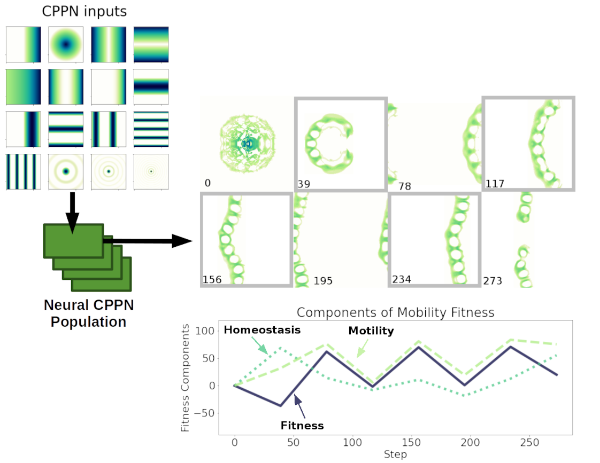

Evolving patterns

Evolving synthesis patterns (encoded as CPPNs) that produce mobile patterns.
The second stage of evolution selects CPPNs based on center of mass mobility and conservation of cell states.
Previous
--
Table of Contents
--
Next